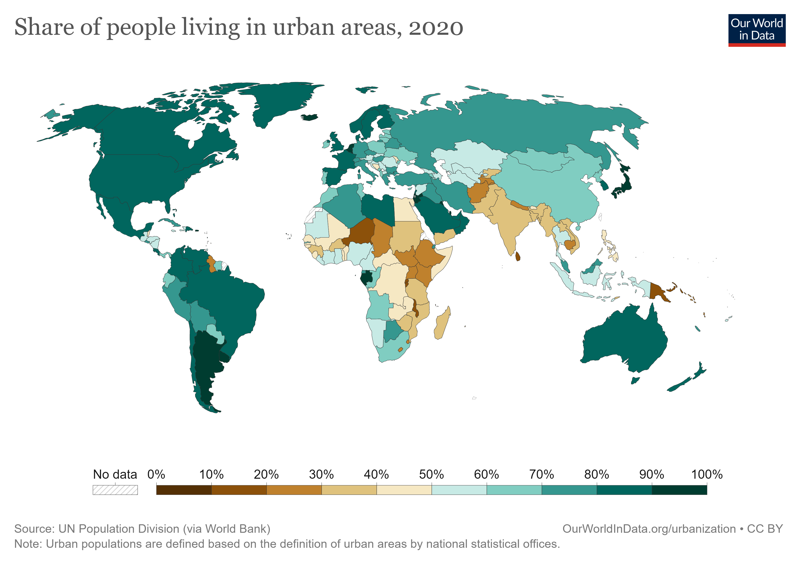

SDG 11, Indicator 3 aims to promote inclusive, safe, resilient, and sustainable urbanization while reducing negative environmental impact.
Solutions include affordable housing, public transportation, green spaces, and disaster preparedness.
Copenhagen in Denmark plans to be carbon neutral by 2025, while Habitat for Humanity provides affordable housing worldwide, and Siemens develops smart infrastructure.
Enhancing inclusive and sustainable urbanization is essential to achieve a more equitable and sustainable future.
